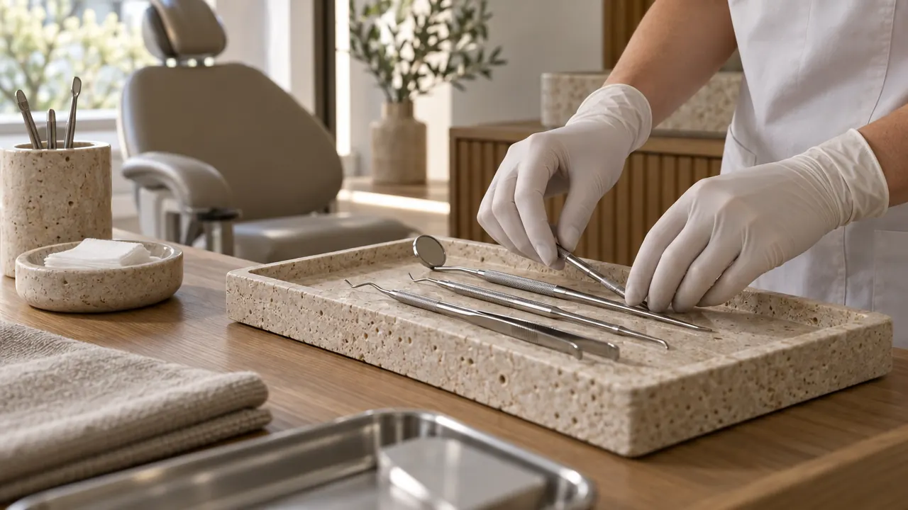
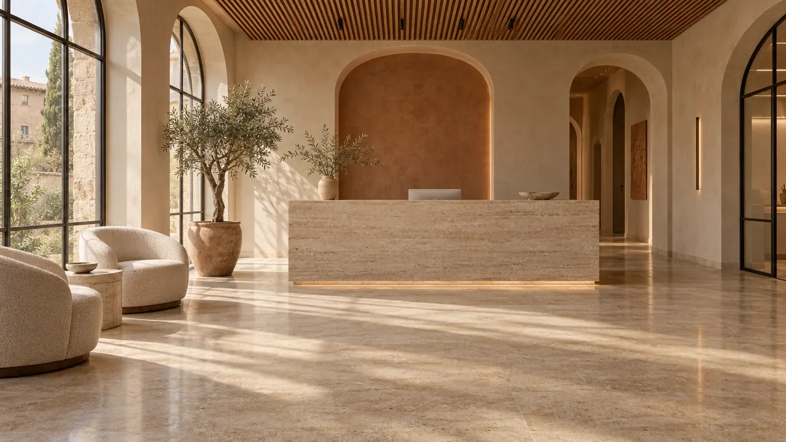
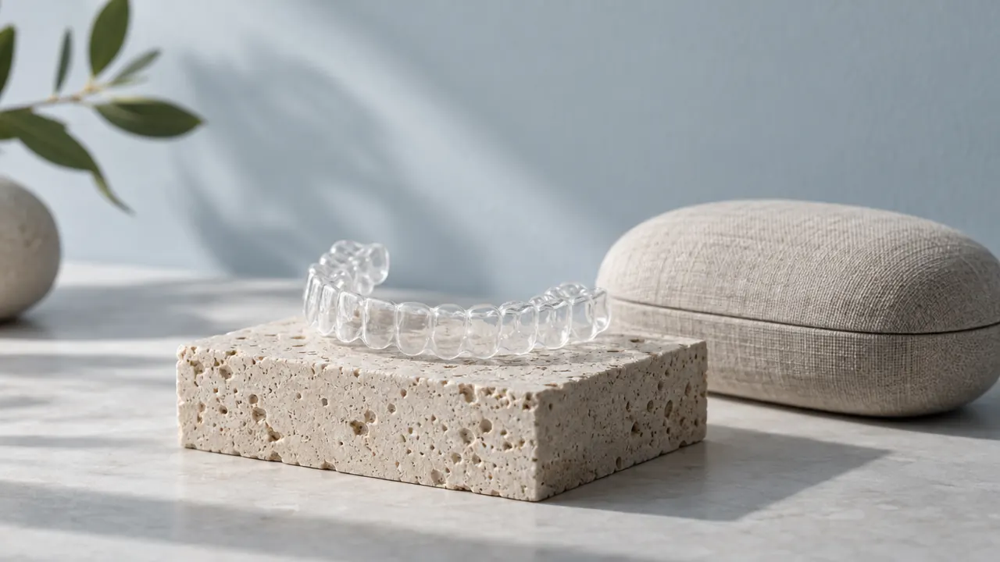
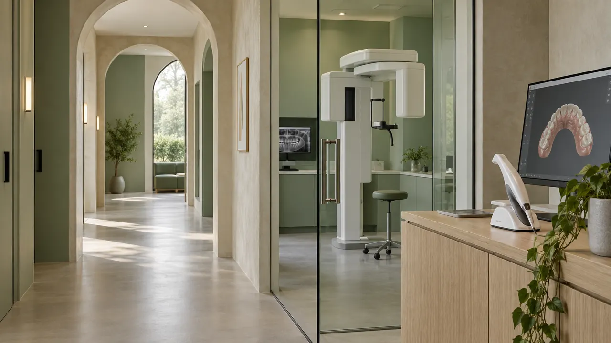
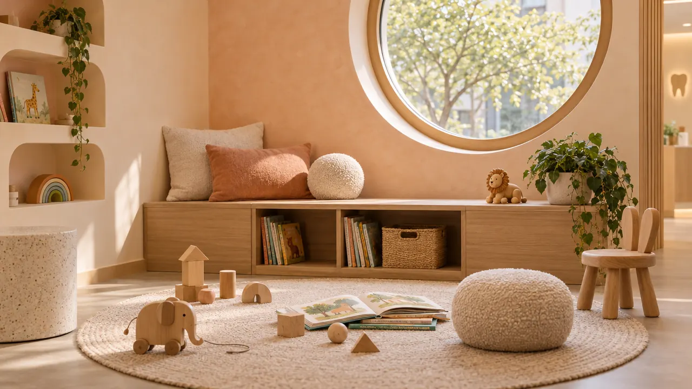
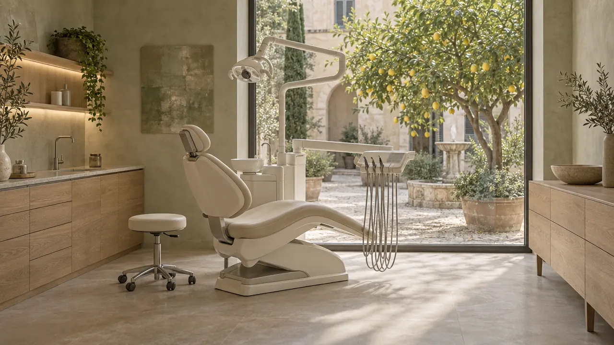
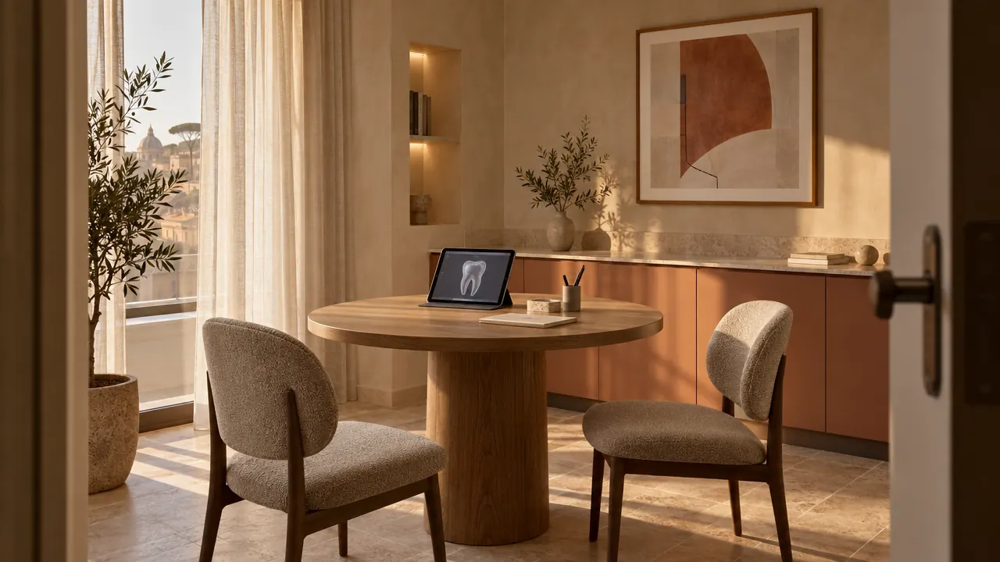
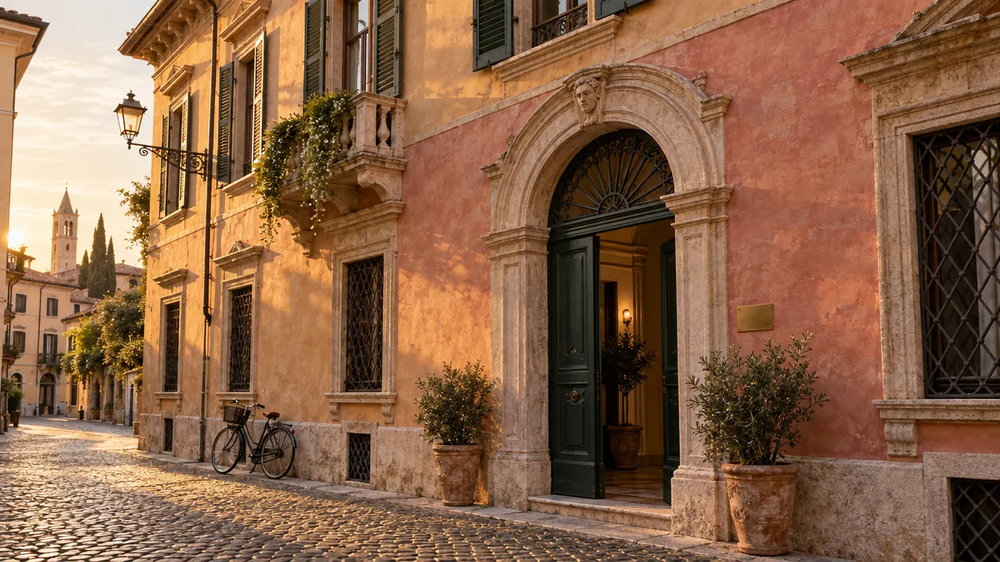

Siamo uno studio odontoiatrico che cura con metodo, e senza fretta
Estetica
2 / 5
Il sorriso,
su misura

Ortodonzia
3 / 5
Denti dritti,
senza fili

Implantologia
4 / 5
Precisione
digitale

Bambini
5 / 5
Il dentista,
senza paura
1 / 5 · Prevenzione
Curare prima del bisogno
Una seduta di igiene da noi dura 50 minuti, non 20. Ti mostriamo sullo schermo dove si accumula la placca e ti diamo un piano di richiami scritto, con le date già fissate.
- Durata
- 50 minuti
- Ogni quanto
- 4–6 mesi, secondo il tuo rischio
- Chi
- Igienista dedicata, sempre la stessa
2 / 5 · Estetica
Il sorriso, su misura
Prima di toccare un dente vedi il risultato: fotografie, scansione 3D e una prova in bocca del nuovo sorriso, reversibile. Decidi solo dopo averlo visto allo specchio.
- Prova del sorriso
- Inclusa nel progetto
- Materiali
- Ceramica e composito, laboratorio in Veneto
- Tempi
- 3–6 settimane
3 / 5 · Ortodonzia
Denti dritti, senza fili
Allineatori trasparenti progettati sulla scansione digitale, controlli ogni 6–8 settimane e un'animazione che ti mostra, mese per mese, come si muoveranno i denti.
- Età
- Dai 7 anni in su, anche adulti
- Controlli
- Ogni 6–8 settimane
- Pagamento
- Anche a rate, senza interessi
4 / 5 · Implantologia
Precisione digitale
Pianifichiamo ogni impianto su TAC 3D a basse dosi e lo inseriamo con una guida chirurgica stampata su misura: incisioni più piccole, tempi più brevi, meno gonfiore.
- Diagnosi
- TAC cone beam in sede
- Intervento
- Guidato, in anestesia locale
- Sedazione
- Cosciente, su richiesta
5 / 5 · Bambini
Il dentista, senza paura
La prima visita è un gioco: il bambino esplora la poltrona, conta i denti allo specchio e torna a casa con un piano di prevenzione per i genitori. Niente camici, niente fretta.
- Prima visita
- Consigliata a 3 anni
- Durata
- 40 minuti
- Orari
- Pomeriggi dopo la scuola
Ascolto vero. Cure misurate. La persona al centro. Sempre aggiornati.
Ascoltare. Visitare.
Pianificare. Curare.
Da Avòrio la prima visita dura un'ora. Ti ascoltiamo prima di guardare, ti spieghiamo cosa vediamo con le tue immagini sullo schermo e ti consegniamo un piano scritto, con tempi e costi chiari. Poi ti segue lo stesso medico, dall'inizio alla fine della cura.
Prenota la prima visita →- 01
Ascoltare
Partiamo da te: cosa ti preoccupa, cosa vorresti cambiare, come sono andate le cure passate.
- 02
Visitare
Esame completo, radiografie digitali a basse dosi e scansione 3D al posto delle impronte in pasta.
- 03
Pianificare
Un piano scritto con le alternative possibili, i tempi e il preventivo. Lo porti a casa e decidi con calma.
- 04
Curare
Lo stesso medico, gli stessi orari, un promemoria prima di ogni appuntamento. Nessuna sorpresa a fine cura.
Una selezione dei nostri spazi
L'accoglienzaVerona 
Sala del limoneVerona 
Stanza dei colloquiVicenza L'angolo dei piccoliVerona Diagnostica digitaleVicenza 
Il palazzoVerona
Prima di venire
-
La prima visita comprende esame clinico, radiografie digitali, scansione 3D e un piano di cura scritto. Il costo viene detratto dal preventivo se decidi di curarti da noi.
-
Per i piani di cura sopra i 600 € proponiamo un pagamento a rate senza interessi, approvato in studio in pochi minuti. Accettiamo anche i principali fondi sanitari integrativi.
-
Puoi fare un primo incontro solo di colloquio, senza poltrona. Per le cure più lunghe offriamo la sedazione cosciente, con un anestesista presente in sala.
-
Ogni giorno, in entrambe le sedi, teniamo due appuntamenti per il dolore acuto. Chiama entro le 11 per essere visto in giornata.
-
A Verona lo studio è in zona a traffico limitato: ti consigliamo il parcheggio pubblico più vicino all'Arena. A Vicenza c'è un parcheggio convenzionato a 200 metri, con un'ora gratuita.
Prenota
La prima visita,
con calma.
Vicolo San Marco in Foro 6, VeronaLun–Ven 8:30–19:30 · Sab 9–13 · 045 000 4210
Contrà Porti 19, VicenzaLun–Ven 9–19 · 0444 000 318
Le aree di cura
Vieni a trovarci
Prenota